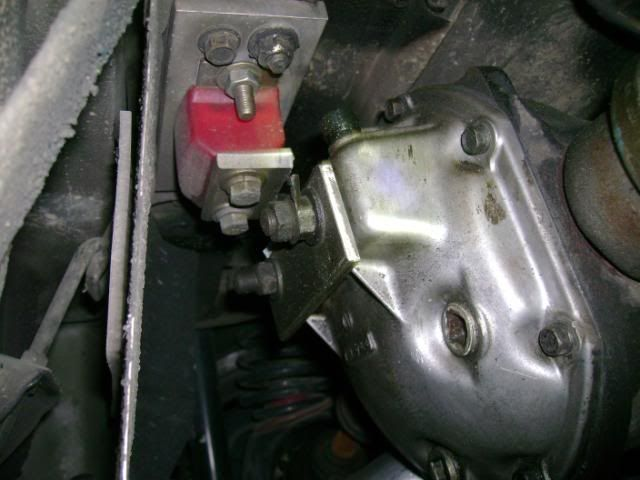
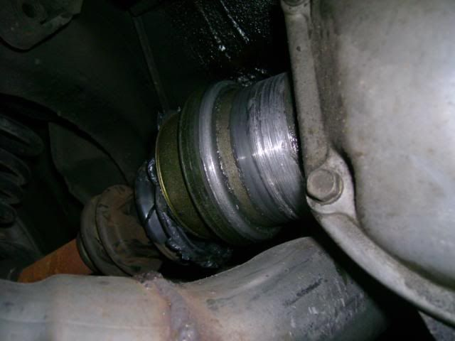
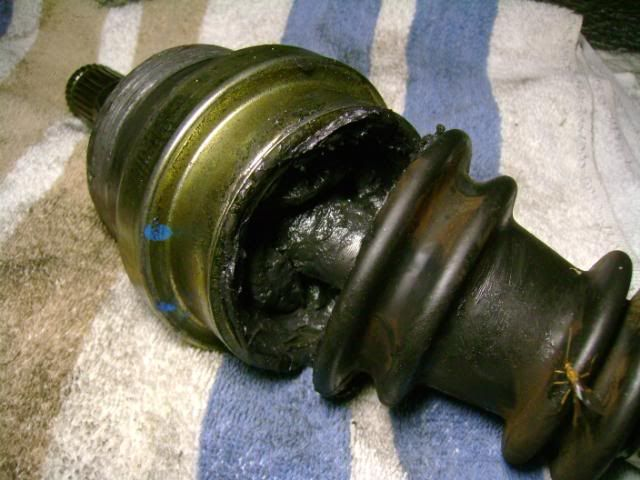
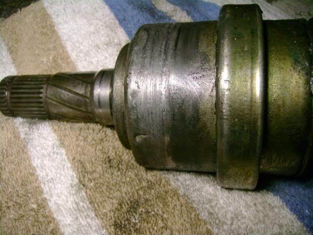
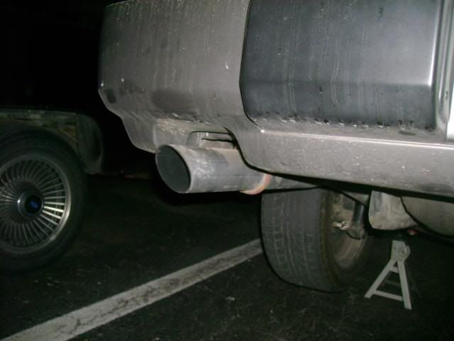
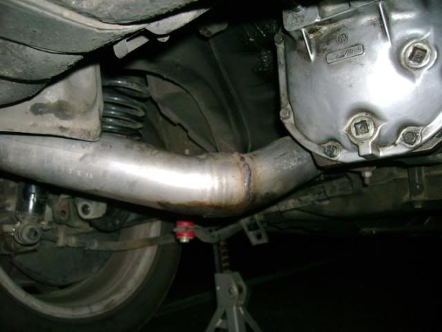
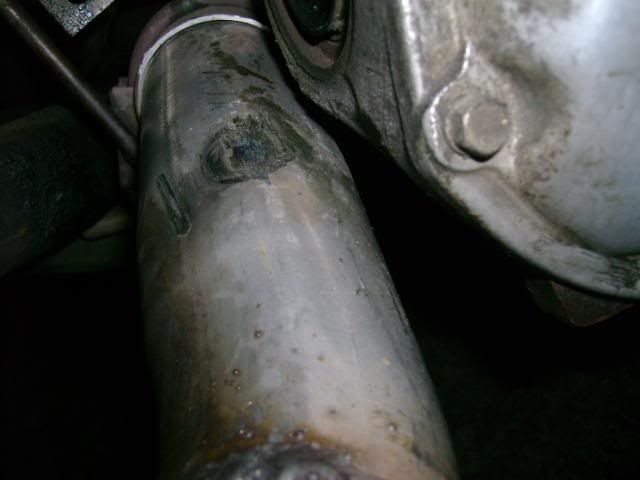
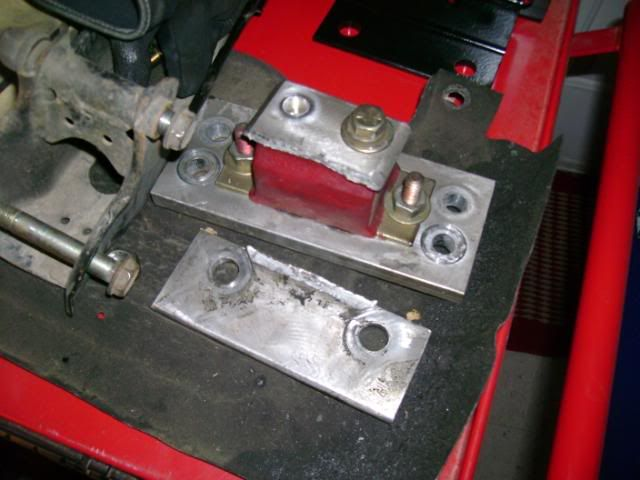
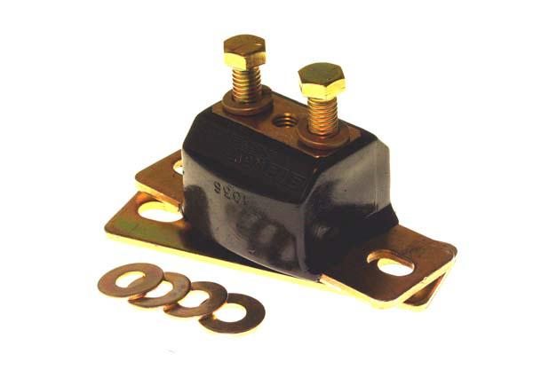

-
I saw it too over at TRs house…OMG!!! it's heavy as hell too
-
Z31Parts is now offering an upgrade for all V1 mount owners to fix the potential angle failure issue. You can select from the simple upgrade angle for durability, or the Version 2 Upgrade Kit which converts your V1 mount to V2 spec. Please see the V2 Poly DIff Mount description here for more information:
http://www.z31parts.com/polyparts.html
Note for all customers who purchased our V1 Differential Mount and wish to upgrade to the V2 Differential Mount: I am offering an upgraded steel angle bracket to improve the V1 mount at no cost. You can also opt for an upgrade kit (sold at cost) which converts the V1 mount to the V2 mount design. Please click here to fill out a simple form. -
OH WOW! That is SCARY :shock:
I have been running Jason's poly engine, transmission, diff, and rear crossmember bushings as well as the Z31R type 2 springs and poly spring seats in my '86 Z since early 2008. I am very glad that I came across this post by chance otherwise I never would have known about the possible catastrophic damage that the mount can allow to happen, although I do have poly throughout so chances should me much less for my application based on what I have read. I've never been to the track in my Z or any car for that matter, but I have done a burnout or two but nothing major. I have been more than satisfied with all of the parts I purchased from him and I am very glad that he is willing to provide the upgraded mount for free. I am actually considering "upgrading" to the newer design as well. My stock diff is about to give out, so this new discovery definitely increases the priority of replacing that at the same time…if only I could find an LSD at a decent price.1986 300zx turbo, 5-speed, T-Top 2 seater
-
Broken diff mount crew. Where's my membership badge?


Looks like the mount and the axle boot were the only casualties. Was able to limp it home.
My Z does have all poly bushings, including the rear crossmember.Tinker Toy Equipped

-
dang is that 1/4" aluminum?

1988 300zxt. gt35, stance, etc. Wheels: Varrstoen ES2 18x9.5 et-13 225/40. 18x10.5 et0 245/40
1990 jetta vr6'd -
Mine was the original version, without the upgraded L bracket.
I'd like to get the V2 conversion asap, guess I'll have to shoot Jason an e-mail and hope he gets back to me.Tinker Toy Equipped
-
Yea, either 1/4" or 3/8" aluminum angle stock.DeleriousZ wrote: dang is that 1/4" aluminum? Shiro Special # 981 Being assembled in my spare time Chromoly acquired!
Shiro Special # 981 Being assembled in my spare time Chromoly acquired!
Originally posted by BoostedMamma -
During my initial inspection I did not find everything that was actually damaged…
Ends up, the axle boot was actually split all the way around, not just dislodged. It attaches on the inside of the housing somehow, I'll have to take a closer look at it. Also, the housing is scraped up from riding on the exhaust. The metal inner structure of the poly isolator has separated from the poly itself. I was able to loosen one bolt, but when trying to loosen the other, the metal just spun around inside the isolator. Does anyone know if I can just run down to the local parts store and swap it out for the ones they keep on the shelves, or will I have to contact Energy Suspension directly? Also, the rear section of my cat-back exhaust is bent and has a large dent in it. At first I thought it had just shifted, but it is actually damaged. No easy or cheap fix there, I will have to have the rear portion made up again at the exhaust shop or just run it how it is, dented and hanging lower than usual.
More pics, excuse the bug, they are everywhere now that it has gotten warmer:






:-?Tinker Toy Equipped
-
extra weight? Kinda like a drive shaft loop, you complain about it until it saves your a** one day. lol Looks like a nice product Jason.Dave
Z31P sponsor
800-988-4345 ext: 114
http://www.DXDRacingclutches.com
90 Z32 Base 5spd, 05 Z33 Touring 6spd.
SOLD- 84 Z31 NA2T GLL 5spd
-
Energy Suspension 3.1108G
Transmission Mount
 -
I got one from another member on this site that he made which is the same construction as the ones that jason carried. You guys are making me nervouos about running it now. It has been good so far.My Build Thread -
All I can say is this sort of thing happens, and we are sorry. Russ designed and manufactured the mounts from aluminum because it was deemed strong enough at the time. The only thing in questionwas fatigue resistance. Despite LOTS of durability testing on both our parts before selling them, we have had 5 failures that I know about out of well over 100 sold. This is a low but unacceptable failure rate, and we stopped selling them very shortly after the first faliure was reported. Obviously it's not something Russ or I are happy about, but we are being proactive and replacing the angle part for free and offering an upgrade at cost. The new design is far better, so there should be no failures in the future. I would be cautious of anyone continuing to make or sell them similar to the old design. I'll have to find out who that is… Ignorance of a design flaw can be a partial excuse in this case, but continuing to sell a known flawed design is another issue altogether.Dave@SBC wrote: extra weight? Kinda like a drive shaft loop, you complain about it until it saves your a** one day. lol Looks like a nice product Jason. -
what you think of that one? its the one I got.My Build Thread -
What a stand up guy.BLOZ UP.com
It is not recommended to confirm proper installation by driving into walls or other barriers as this could cause personal injury or damage to the vehicle.

Copyright © 2006–. All rights reserved. Privacy Policy